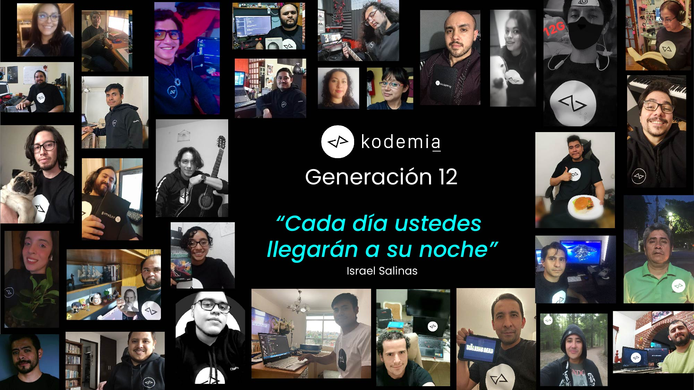

UN POCO SOBRE MI
Hola mi nombre es Ubaldo Canseco Hernandez, actualmente tengo 28 años de edad. Nací en una comunidad rural al sur del estado de Oaxaca , mi infancia estuvo rodeado de mucha naturaleza y espacios abiertos por lo que me considero una persona muy respetuosa de la flora y fauna silvestre.
Durante mi vida escolar viviendo con mis padres desarrolle una buena creatividad y un buen espíritu de aventura, a los 15 años comenzé a interesarme por la tecnología después de poder programar un control remoto de un reproductor de DVD que mi papa trajo de su viaje a estados unidos, después de muchísimos intentos fallidos logre hacerla funcionar, esto me llevo a darme cuenta que la constancia y la perseverancia te conducen al éxito. Cuando compre mi primera laptop y mi primer teléfono celular creció mi interés por las informática, sentía mucha curiosidad por saber cómo funcionan las apps y las páginas web, esto me llevo a instalarle un nuevo sistema operativo a mi computadora solo para experimentar, así fue que conocí LINUX y los muchísimos versiones. LINUX
Introducción a javaScrip
Comencé a investigar sobre temas de programación en el 2019, y ya saben los algoritmos en redes sociales me arrogaban muchas opciones de donde escoger, tanta información te abrumaba al punto de no saber que opción tomar, en 2021 comencé en una academia de programación (KODEMIA) relativamente nueva en ciudad de México la cual contaba con un programa de educación muy completo, el bootcamp para ser fullstack developer web duraría 5 meses de aprendizaje constante , bastante agotadores para alguien que recién iniciaba en el mundo de la programación y sin conocimientos previos.
Leonardo Santiago CEO y fundador de KODEMIA solía decir que la programación no es para todos, y con justa razón, el diseño y la programación de un página web puede ser bastante compleja, por suerte hoy en día ya no se programa como hace 15 años, las constantes actualizaciones en las herramientas open source de programación avanzan a pasos agigantados
Desde 2012, todos los navegadores modernos soportan completamente ECMAScript 5.1, una versión de JavaScript. Los navegadores más antiguos soportan por lo menos ECMAScript 3. La sexta edición se liberó en julio de 2015
Todos los navegadores modernos interpretan el código JavaScript integrado en las páginas web. Para interactuar con una página web se provee al lenguaje JavaScript de una implementación del Document Object Model (DOM). Javascript es el único lenguaje de programación que entienden de forma nativa los navegadores.